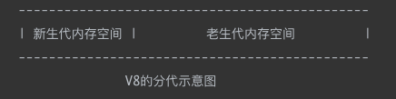
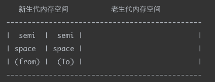

这里主要讲的是 Chrome 的 JavaScript 引擎 V8 的垃圾回收机制。
# 内存限制
V8 之中，对内存的使用有限制（64 位下约 1.4G、32 位下约 0.7G）——《深入浅出 Nodejs》。
因为 V8 的内存管理机制是为浏览器而设计，而且为了避免长时间的垃圾回收阻塞 JavaScript 线程，所以就有这么一套限制。
当然，也可以在启动时传递 --max-old-space-size 或 --max-new-space-size 来调整这个限制大小。但是只能在初始化 / 启动时指定，无法运行过程中扩充
# V8 的垃圾回收机制
V8 的垃圾回收策略主要基于分代式垃圾回收机制。在这个机制中，主要将内存分为新生代和老生代两代。
- 新生代：生存时间较短的对象
- 老生代：生存时间较长的对象
- 新生代空间较小，老生代空间较大

# 新生代垃圾回收
新生代的垃圾回收算法主要通过 Scavenge 算法进行垃圾回收，该算法的流程主要是：
将堆内存一分为二，一个处于使用中 (from)，一个处于闲置中 (To)。

分配内存时，会先分配到使用中的内存（from 空间），当开始进行垃圾回收的时候，回收生命周期结束的对象。
- 对对象区域进行垃圾回收（标记清除），留下在使用中的活跃对象
- 把对象区域中剩下的活跃对象复制到空闲区域（复制过程会消除内存碎片）
- 翻转，使用区域（from）和空闲区域 (To) 身份互换。循环重复
这个算法是典型的牺牲空间换时间的算法（因为只能使用堆内存的一半）。
该算法只复制存活的对象，而实际应用中新生代大多数对象的存活时间都是比较短的，所以时间效率上相对来说比较优异。但是每次都需要复制，而复制操作需要时间成本，如果新生区空间设置得太大了，那么每次清理的时间就会过久，所以为了执行效率，一般新生区的空间会被设置得比较小（1～8m）。这也是为什么新生代内存空间相对老生代来说比较小。
# 对象晋升策略
当一个对象经过新生代垃圾回收中多次复制仍然存活时，它就会被认为是生命周期较长的对象，随后会被移动到老生代内存空间中（也就是晋升）。
在上面新生代垃圾回收过程中，并不是每一次都会把对象复制到闲置空间（To）中，而是在复制之前，会先判断两个条件，如果满足条件，则会触发对象晋升，而不是复制到闲置空间中。
这两个条件分别是：
- 是否经历过 Scavenge 回收（主要是通过内存地址判断）
- To 空间的内存占用比是否超过限制
两个条件达成其一即可。
对象晋升后，会在老生代中被新的回收算法处理。
# 老生代垃圾回收
在老生代中，存活对象通常占的比重较大，所以复制的效率会相对较低，不适用 Scavenge 算法。
V8 中老生代的垃圾回收主要采用了 **Mark-Sweep (标记 - 清除) 和 Mark-Compact (标记 - 整理)** 相结合的方式。
# Mark-Sweep（标记 - 清除）
顾名思义，Mark-Sweep 叫做标记 - 清除，它分为两个阶段：标记和清除。
- 标记阶段，Mark-Sweep 遍历堆中的所有对象，并标记活着的对象
- 清除阶段，Mark-Sweep 清除没有被标记的对象
可以对比出，Scavenge 只复制活着的对象，而 Mark-Sweep 只清理死亡对象。所以前者适合（复制场合少，即存活少的区域）新生代，后者适合（清理场合少，即存活多的区域）老生代。
但是 Mark-Sweep 有一个比较严重的问题，就是清除后可能会有很多内存碎片，造成这些内存空间无法合理的利用，要消除内存碎片，就需要进行内存整理。
# Mark-Compact（标记 - 整理）
Mark-Compact 就是为了解决 Mark-Sweep 的问题而提出的。
Mark-Compact，即标记 - 整理，是在标记 - 清除的基础上演变来的。它和 Mark-Sweep 的差别在于，当对象在标记为死亡后，在整理的过程中，将活着的对象往一端移动（整理），移动完成后，直接清理边界外的内存。
因为 Mark-Compact 需要移动对象再进行清除，很明显，它比 Mark-Sweep 要慢。
# V8 的策略
通过上面三种算法，我们可以得出一个对比表格：
| 回收算法 | Scavenge | Mark-Sweep | Mark-Compact |
|---|---|---|---|
| 速度 | 最快 | 快 | 慢 |
| 是否有碎片 | 没有 (复制黏贴过程中消除) | 有 | 没有 |
| 适用场景 | 新生代 (存活对象少的地方) | 老生代 (存活对象多的地方) | 老生代 |
Mark-Compact 慢，Mark-Sweep 有碎片，而 V8 在取舍上结合两种：主要使用 Mark-Sweep，当空间不足以分配空间给新生代中晋升的对象时，使用 Mark-Compact 消除内存碎片。
# 总结
V8 根据代际假说，将对象分为两部分：新生代与老生代。并且对两部分使用不同的算法
- 新生代使用 Scavenge 算法进行垃圾回收，这种算法牺牲空间来换取时间，实际上只利用了新生代一半的空间进行存储。但优点在于面对生命周期短的对象时速度较快，而且不会产生内存碎片。
- 新生代中的对象一旦满足两个条件之一，就会进行对象晋升，将其移动到老生代区域。
- 老生代使用 Mark-Sweep 及 Mark-Compact 两种结合。主要使用 Mark-Sweep，当碎片太多、不足以分配一块内存给晋升的对象时，就利用 Mark-Compact 进行整理。
# V8 垃圾回收算法的问题和解决方法
为了避免出现回收逻辑和 JavaScript 逻辑不一致的情况，当垃圾回收进行时，需要暂停 JavaScript 的应用逻辑，这种现象叫做全停顿。
在老生代的垃圾回收中，因为空间比较大，运行一次垃圾回收可能要占用相当长的一段时间，这段停顿时间可能会造成卡顿。
为了减小停顿时间带来的影响，V8 引入了增量标记，即将一个同步一口气完成的动作分为许多个 “step”，在这些 step 之间可以穿插一些 JavaScript 应用逻辑（其实我总觉得和操作系统调度、React fiber 的改进思想有些异曲同工，都是分片），这样就不会长时间无响应。
# 参考资料
《深入浅出 Nodejs》—— 朴灵
https://blog.poetries.top/browser-working-principle/guide/part3/lesson13.html